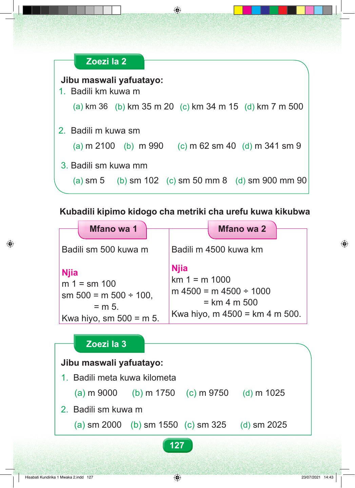

Zoezi la 2 Jibu maswali yafuatayo: 1. Badili km kuwa m (a) km 36 (b) km 35 m 20 (c) km 34 m 15 (d) km 7 m 500 2. Badili m kuwa sm (a) m 2100 (b) m 990 (c) m 62 sm 40 (d) m 341 sm 9 3. Badili sm kuwa mm (a) sm 5 (b) sm 102 (c) sm 50 mm 8 (d) sm 900 mm 90 Kubadili kipimo kidogo cha metriki cha urefu kuwa kikubwa Mfano wa 1 Mfano wa 2 Badili sm 500 kuwa m Badili m 4500 kuwa km Njia Njia km 1 = m 1000 m 1 = sm 100 m 4500 = m 4500 ÷ 1000 sm 500 = m 500 ÷ 100, = km 4 m 500 = m 5. Kwa hiyo, m 4500 = km 4 m 500. Kwa hiyo, sm 500 = m 5. Zoezi la 3 Jibu maswali yafuatayo: 1. Badili meta kuwa kilometa (a) m 9000 (b) m 1750 (c) m 9750 (d) m 1025 2. Badili sm kuwa m (a) sm 2000 (b) sm 1550 (c) sm 325 (d) sm 2025 127 Hisabati Kundirika 1 Mwaka 2.indd 127 23/07/2021 14:43